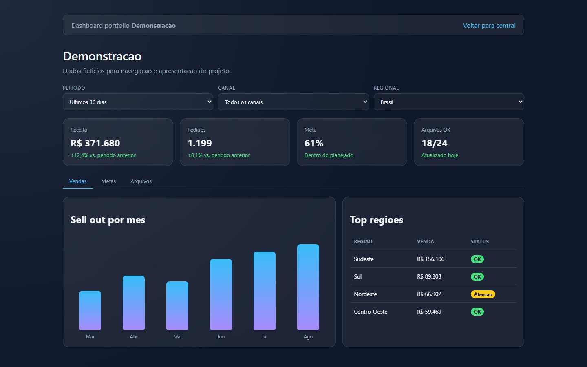

Una puerta de entrada a todos los paneles.
Un portal que reúne los paneles de la empresa en una sola página de tarjetas. Cada tarjeta lleva a un panel, y la lista se mantiene desde un área administrativa: registrar, editar o eliminar un panel no requiere tocar el código.

Muchos paneles, ningún lugar para encontrarlos.
Cada panel nace como un proyecto aparte, con su propia dirección. Con el tiempo, los enlaces quedan dispersos entre mensajes, favoritos y correos, y quien necesita un número no sabe por dónde empezar. La Central de Paneles lo resuelve con una sola página, donde cada panel aparece como una tarjeta.
¿Dónde está el panel de aquel cliente? En la central, con nombre, descripción y un clic.
Una página para todo
Todos los paneles lado a lado, cada uno con nombre, una frase sobre lo que muestra y el enlace de acceso.
Sin tocar el código
Un panel nuevo entra por el área administrativa: nombre, descripción y URL. La página de inicio se arma sola.
Quién puede modificar
La lista es pública para lectura; registrar, editar y eliminar paneles o administradores es tarea del área administrativa.
La página de inicio no sabe qué paneles existen.
Solo lee una lista y dibuja una tarjeta para cada elemento. Esa separación guio el resto del proyecto:
Datos fuera de la pantalla
Los paneles viven en una lista (data/paineis.json), no en el HTML. Agregar un panel es agregar un elemento.
Campos mínimos, el resto se deduce
Sin inicial, la página de inicio usa la primera letra del nombre. Sin URL, la tarjeta apunta al panel de demostración de ese cliente.
La página nunca queda vacía
Si el archivo de datos no carga, la página de inicio usa una lista de respaldo escrita en el propio código.
Nada real en la demostración
Sin inicio de sesión, sin correo y sin base de datos. Las ediciones quedan solo en el navegador de quien prueba, y los administradores son ficticios.
Cinco campos describen un panel.
El archivo data/paineis.json es una lista simple. Cada panel tiene cinco campos, y solo el nombre es indispensable para que aparezca la tarjeta:
| Campo | Qué guarda | Si está vacío |
|---|---|---|
id | Identificador del panel | En el registro, se genera con crypto.randomUUID() |
nome | Título de la tarjeta | Obligatorio en el formulario de administración |
descricao | Una frase sobre lo que muestra el panel | La tarjeta muestra un texto predeterminado |
url | Dirección del panel | Apunta a painel-demo.html?cliente=<id> |
inicial | Letra del ícono de la tarjeta | Primera letra del nombre, en mayúscula |
La página de inicio busca la lista en tres lugares, en este orden, y se detiene en el primero que responda:
Una tarjeta por panel, armada al instante.
La página de inicio es una sola página, con un título, el enlace a la administración y una cuadrícula que se ajusta al ancho de la pantalla (auto-fit, tarjetas de al menos 260 px). El JavaScript lee la lista y crea cada tarjeta:
Carga la lista
navegador, JSON o respaldo, en ese orden
Completa lo que falte
inicial a partir del nombre y URL del panel de demostración cuando no hay dirección
Dibuja la tarjeta
ícono con la inicial, nombre, descripción y “Acessar painel” (Acceder al panel)
Decide cómo abrir
los enlaces externos (http o https) se abren en una pestaña nueva, con noopener noreferrer; los enlaces internos se abren en la misma pestaña
El aspecto de la central
Fondo azul pizarra en degradado, tarjetas translúcidas con desenfoque e ícono en degradado de azul cielo a lila. Al pasar el mouse, la tarjeta sube y el borde se ilumina.
Sin dependencias
HTML, CSS y JavaScript puro, sin framework y sin etapa de build. Lo que está en el repositorio es exactamente lo que recibe el navegador.
Dos pestañas: paneles y administradores.
El área administrativa concentra el mantenimiento de la central. En la demostración, todo lo que se modifica queda guardado en el localStorage en dos claves: portfolio_paineis_publicados y portfolio_admins.
Registro y edición en el mismo formulario
Nombre, descripción y URL. “Editar” llena el formulario y cambia el botón a “Salvar alterações” (Guardar cambios); “Remover” (Eliminar) pide confirmación. Nombre y URL son obligatorios.
Usuario, correo y fecha de creación
Crear un administrador y, para cada uno, cambiar el nombre de usuario, el correo o la contraseña, o eliminarlo. Cada acción abre una ventana solo con los campos necesarios.
Usuario principal
Marcado con la etiqueta PAI (padre). El botón de eliminar queda desactivado para él.
Contraseña simulada
En la demostración, cambiar la contraseña solo confirma la acción en pantalla; no se guarda ninguna contraseña.
Efecto inmediato
Al volver a la página de inicio, las tarjetas ya reflejan lo que se registró, editó o eliminó.


En el proyecto original, la puerta tiene llave.
La versión publicada aquí es estática y abre la administración a cualquier visitante. En el proyecto original, el área administrativa está protegida por inicio de sesión y existe una página para restablecer la contraseña. La demostración mantuvo las pantallas y reemplazó lo que dependía de un servidor:
reset-senha.html avisa que la contraseña está desactivada y lleva directo a la administración.exemplo.com.Mostrar cómo funciona sin exponer a quién lo usa: la demostración no guarda ningún dato real.
Un panel de ejemplo para cualquier tarjeta.
Cuando un panel se registra sin URL, la tarjeta apunta a painel-demo.html?cliente=<nome>. Ese panel lee el nombre del cliente en la dirección, lo usa como título y arma un dashboard con números ficticios, sin servidor y sin base de datos.
3 filtros
Período (30, 60 o 90 días), canal y regional.
4 indicadores
Ingresos, pedidos, meta y archivos OK.
Gráficos en CSS
Barras dibujadas con HTML y CSS, sin biblioteca de gráficos.
Los filtros funcionan de verdad: cada combinación aplica un multiplicador sobre la serie base, y los indicadores, gráficos y tablas se recalculan con cada cambio.

?cliente=demonstracao.Se envió a main, ya está en línea.
La publicación en GitHub Pages la hace un workflow de GitHub Actions (.github/workflows/pages.yml). Se ejecuta con cada envío a la rama main o manualmente, y publica la carpeta completa del repositorio:
Checkout
actions/checkout@v4 descarga el repositorio
Configura Pages
actions/configure-pages@v5
Empaqueta el sitio
actions/upload-pages-artifact@v3, con la raíz del repositorio como contenido
Publica
actions/deploy-pages@v4 devuelve la dirección de la página en el entorno github-pages
Permisos mínimos
El workflow solo lee el contenido y escribe en Pages (contents: read, pages: write, id-token: write).
Un despliegue a la vez
El grupo de concurrencia pages evita dos publicaciones simultáneas, sin cancelar la que está en curso.
Sin Jekyll, con 404
El archivo .nojekyll publica los archivos tal como están, y el 404.html lleva las direcciones antiguas al lugar correcto.
En producción, con inicio de sesión; aquí, en el navegador.
- páginas y
paineis.json - workflow de Pages
- estudio de caso en la raíz
- central en
app/
- tarjetas y administración
- ediciones en el
localStorage
Esta demostración tiene las mismas pantallas que el proyecto original: inicio con las tarjetas, administración con paneles y administradores, y el panel de ejemplo. Lo que cambió fue el acceso, que quedó libre, y el almacenamiento, que pasó al navegador. Las tarjetas llevan a los otros paneles del portafolio, también publicados con datos ficticios.
Tecnologías
Registra un panel y mira cómo aparece la tarjeta en el inicio.
Recorrido sugerido: abre la central, haz clic en “Administrar painéis” (Administrar paneles) y registra un panel solo con el nombre. Vuelve al inicio: la tarjeta nueva tiene la inicial calculada y abre el panel de demostración con ese nombre.